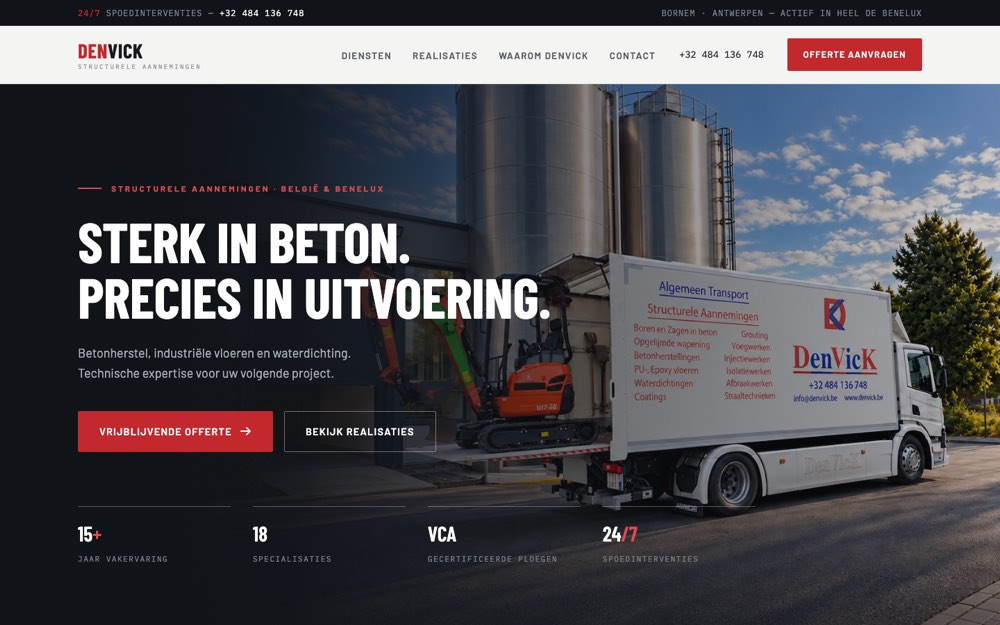
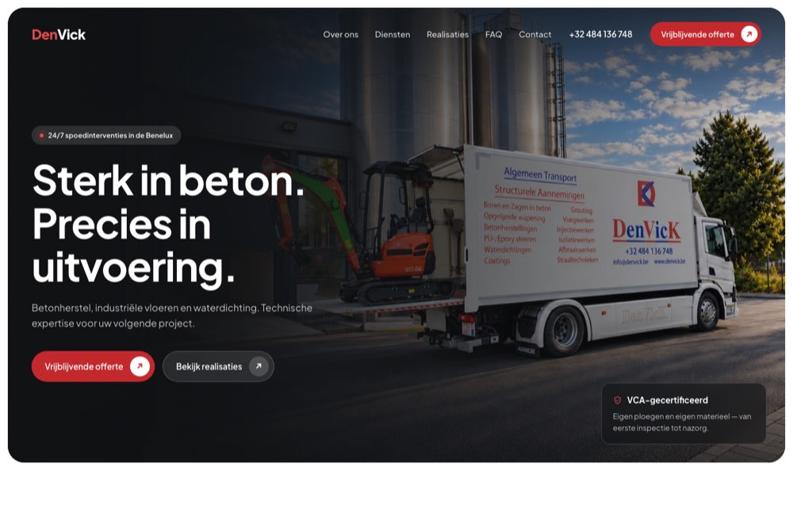
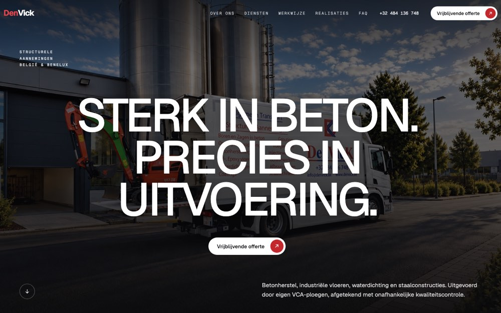

Voorstel 01
Licht industrieel
Strakke hoeken, technische typografie, dienstenkaarten die bij hover een projectfoto tonen.
Bekijk voorstel
Voorstel 02
Zacht & modern
Afgeronde panelen, rustige vlakken, diensten in een accordeon en realisaties die over elkaar schuiven.
Bekijk voorstel
Voorstel 03
Cinematisch editorial
Groot beeld, grote typografie en beweging bij het scrollen. Diensten wisselen van foto bij hover.
Bekijk voorstel